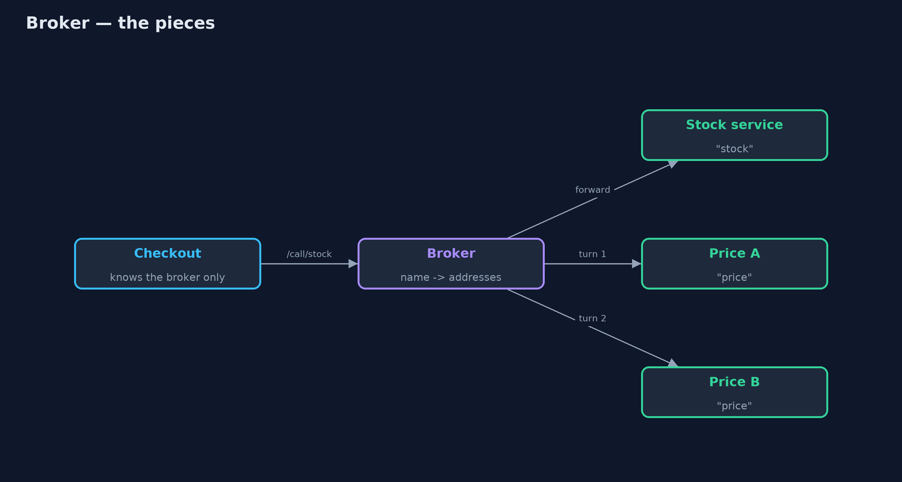
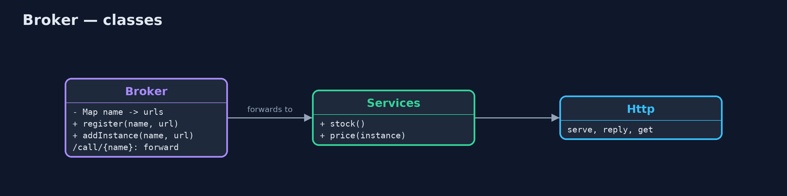
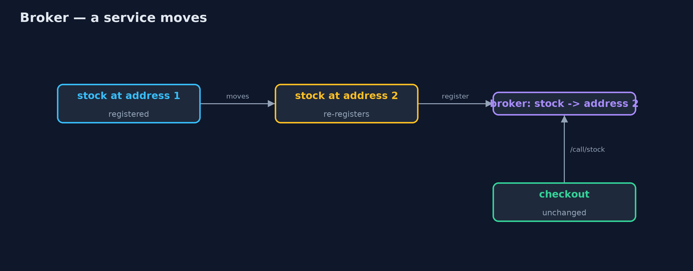
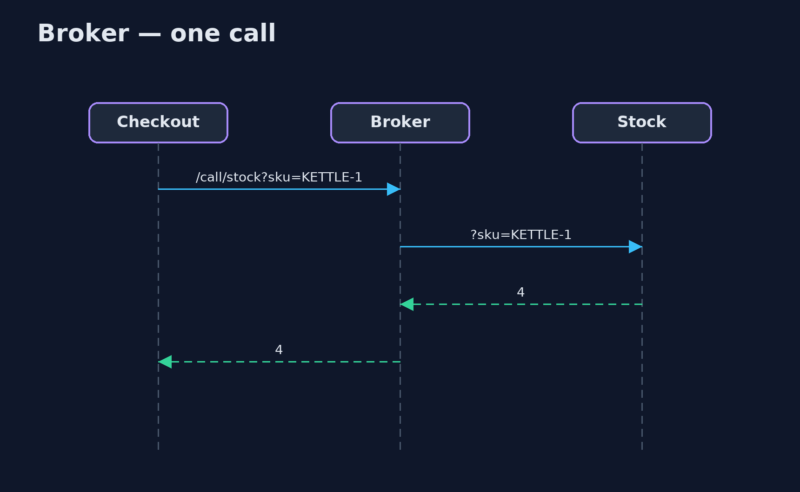

Broker Pattern
src/main/java/com/jk/explore/broker/
├── Broker.java The pattern: a go-between that knows where every service lives
├── BrokerDemo.java The five acts: hard-coded addresses, calls through a broker, a service that moves, several instances, and the bill
├── Http.java Small helpers: start a local web server, reply to a request, and make a GET request
└── Services.java The shop's back-end services, each a small web server that answers one kind of questionPut a broker between clients and services: services register by name, clients call by name, and the broker finds the service and forwards the call.
Broker is an architectural pattern for distributed systems. Clients do not know where the services they use are running. Instead, each service registers with a broker under a name, and clients send their calls to the broker, by name. The broker finds a live instance of that service, forwards the call and returns the answer.
Services can then move, be added or be replaced without any client changing. The same idea underlies Java RMI's registry, CORBA, and today's service registries and service meshes.
The idea in everyday terms
Think of an old hotel switchboard. Guests do not know which extension the kitchen or the laundry is on; they ask the operator to put them through to room service. When room service moves to a new office, only the operator's list changes. But if the switchboard goes down, nobody can call anyone.
The scenario
The online store's checkout calls a stock service and a price service. Their addresses were written into checkout's configuration. When the stock service was moved to a new machine, checkout kept calling the old address and every order failed until checkout was changed and released.
Run
./gradlew runThe demo tells the story in 5 acts, each printing exact numbers that the tests check:
| Act | What it shows |
|---|---|
| 1. A hard-coded address | Checkout calls the stock service at a fixed address: 4 kettles; the service moves, and checkout fails with connection refused. |
| 2. Calls through a broker | The stock service registers as "stock"; checkout calls /call/stock and gets 4; it knows only the broker. |
| 3. A service moves | The stock service moves and re-registers; checkout, unchanged, asks for MUG-1 and gets 20. |
| 4. Several instances | Two price instances registered: four calls alternate price-a, price-b, price-a, price-b. |
| 5. The bill | One call is 2 network requests; when the broker stops, every service is unreachable. |
Test
./gradlew test6 tests in BrokerTest, DemoRunsTest. Every number the demo prints is asserted, and nothing depends on the clock, so every run gives the same result.
Technologies and versions
| Technology | Version | Used for |
|---|---|---|
| Java | 21 | the code (toolchain set in build.gradle) |
| Gradle | 9.2.1 (wrapper) | build and run, nothing to install |
| JUnit | 5.10.2 | the tests |
| videokit | repository tool | the narrated video and animation: Piper en_US-amy-medium, speed 0.8, longer pauses (the approved amy-slow voice) |
Learning Material
| Document | What it is for |
|---|---|
| Problem statement | the situation and what the project must show |
| Prerequisites | what you need to know first |
| Broker, explained | the acts in prose |
| Session guide | a one-hour lesson with exercises |
| Animated walkthrough | the acts step by step, narrated |
| Spec | what this project must be true of |
The pattern in one picture
Clients call the broker by name; the broker knows the addresses.

Where each piece sits
A registry of names and a forwarding endpoint.

How the data moves
Only the broker's list changes.

Who calls whom, in order
Two hops, one answer.

Video
video/broker-pattern-explained.mp4 (with .m4a audio and .srt subtitles) is built by video/build_video.sh. Rendered media is not committed.
What it costs
- An extra hop. Every call is two network requests: client to broker, broker to service.
- One thing everyone needs. When the broker stopped, every service became unreachable; real brokers run several copies.
- Another system to run. The broker must be monitored, secured and kept fast.
When this is too much
With a handful of services that never move, configured addresses are simpler. And many platforms already do this job: Kubernetes services and DNS, or a service registry with a client-side load balancer, which avoids the extra hop.
Where you have already met this
- Java RMI's registry and CORBA's object request broker.
- Service registries such as Consul, Eureka and etcd.
- Kubernetes services, which give a stable name to moving pods.
- API gateways and service meshes that route calls by name.
Where this sits
This project is in architectural-design-patterns. Similar ideas appear as Service Discovery and API Gateway in the microservices category.